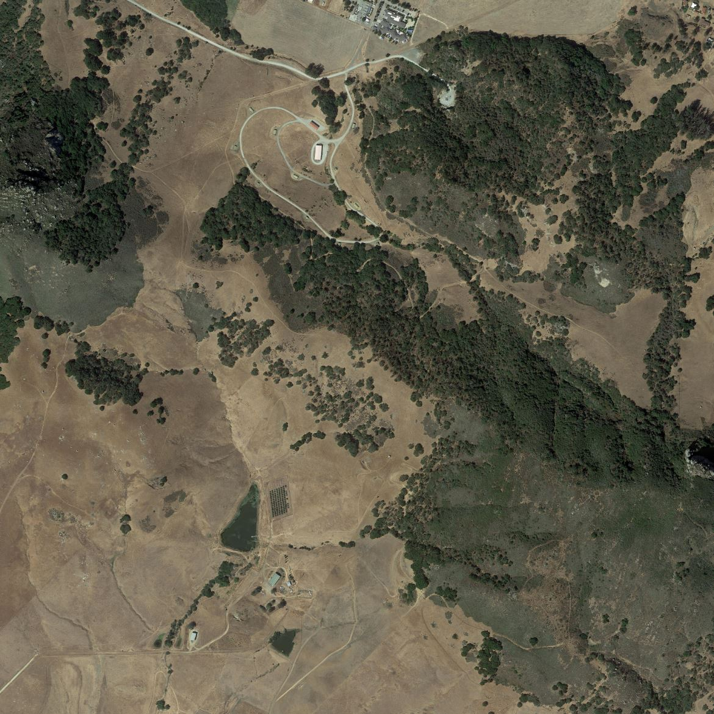
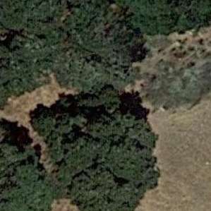
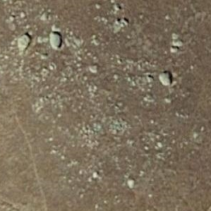
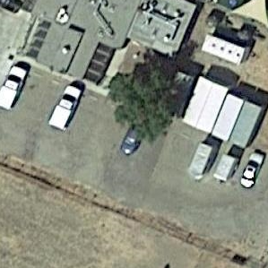
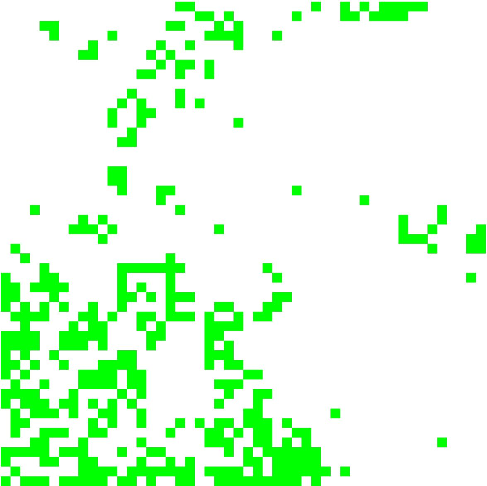

Introduction
In this project we seek to be able to analyze large satellite images and classify what is going on within
smaller segments of them so that we might stich these segments together to try and find openspace that
could be used in an emergency to land an aircraft. In the scope of this project we seek to classify segments
of a larger satellite image as either a development, openspace, rocks, or vegetation.
To do this we will be using the Inception v3 nueral network architecture that was freely published by google.
This architecure is used to classify images... below is a snippit from ai.googleblog.com that explains the power of Inception-v3.
The libraries and technology used in this project can be considered as cutting edge as it gets. Several of the tensorflow modules used to train the nueral network were published in the spring of 2020. These tools have not only proven themselves to be useful in classifying satellite imagery but in a broad range of imagery as well.
Overall this project presented a unique opportunity to showcase the power and efficacy of todays cutting edge machine vision tools. This project goes beyond the typical nueral network that seeks to validate itself using its training data and instead is applied to images it has never seen.
Implementation
Operating Environment

This program runs off of large satellite images that are gathered from GoogleMaps. For this example the image
sizes were around 15000 x 15000 pixels. From there the images are sliced into smaller 299 x 299 slices that are
then fed into the Emergen-See nueral network and classified as one of the following...
1. Development
2. OpenSpace
3. Rocks
4. Vegetation
  

Agent Output
The agent re-creates the original satellite image with the knowledge of the terrain analyzed. From there a landing algorithm can be ran over the new image and a selection of possible runways can be returned to the aircraft. Below is a random satellite image that was fed into the classifier. The green squares in the right image indicate an area of space that has no object within it. While this is not the finished product one can see how the green squares tend to inhabit the areas of the map that are covered in grass. This is a sure sign that the network is working as it is intended.

Agent - Training
The Emergen-See nueral network is trained using what is known as transfer learning. Using TensorFlow in parallel with TensorHub, I am able to download a similar satellite imagery NN that took weeks of processing time to train. From there I am able to retrain the the final layer of classification nodes within approximately 5 minutes. It is within this final layer that the labels for classification are generated. What is powerful in this methodology is that training time takes only a couple of minutes instead of several weeks for a powerful and interactive network.
Current Results
In training, the NN is able to achieve classification accuracies of around approximately 97%. When applied to data is has not seen before the accuracy goes down to approximately 80-90%. While this is still a work in progress I do believe that unseen data classifications will increase back up into the 90th percentile again as observations of the results reveal edge cases that I never trained the NN for.